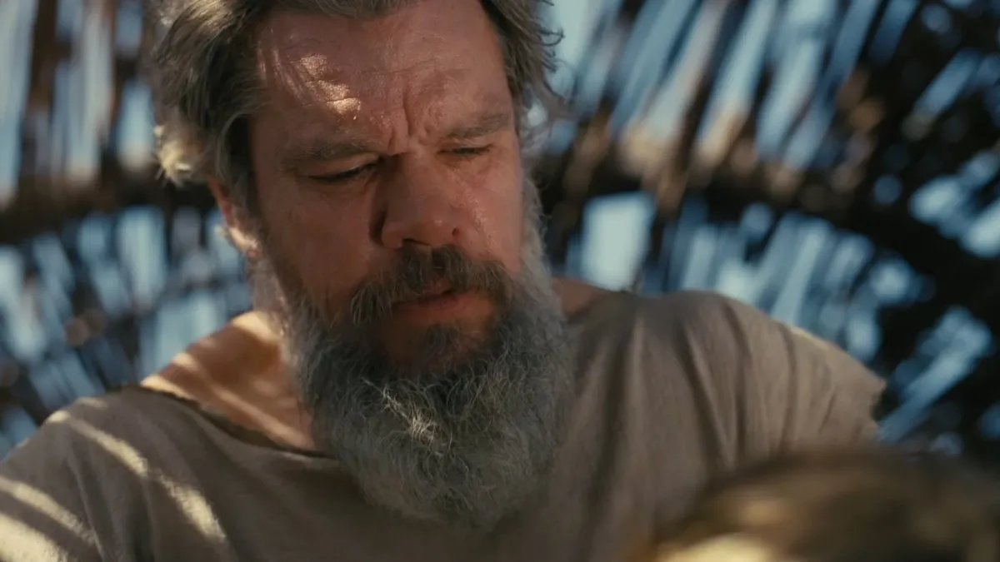
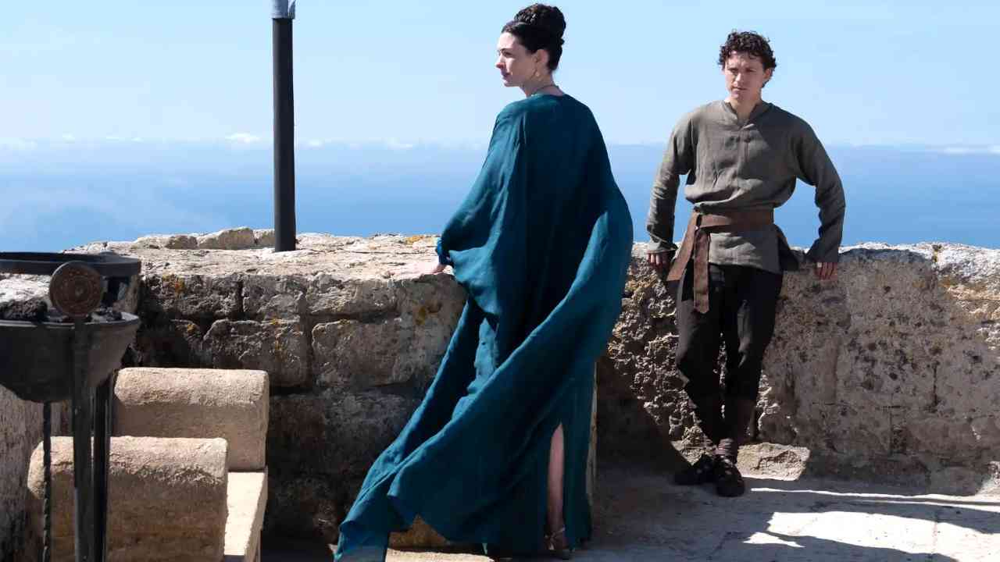
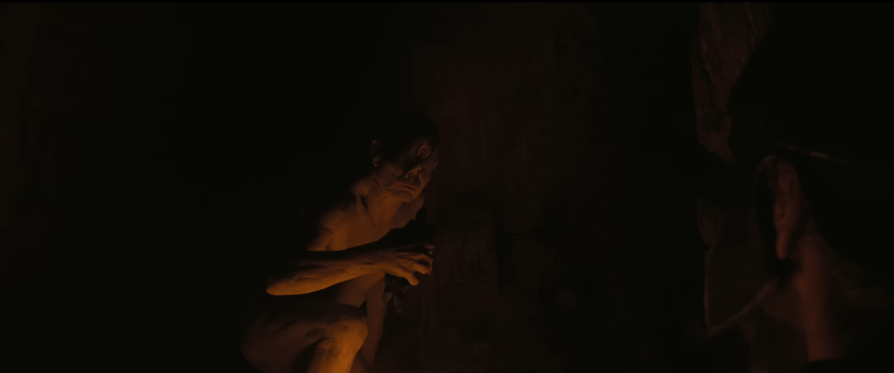
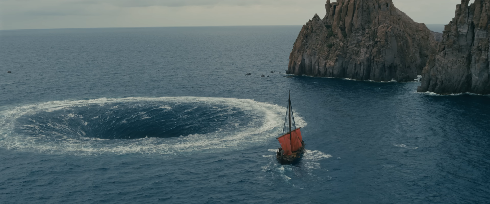
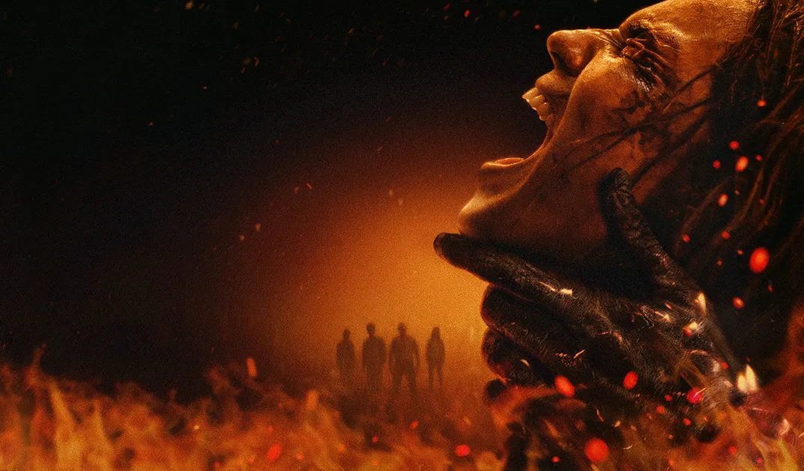

Note : 4,5/5
Une épopée qui frôle le chef-d'œuvre, portée par un casting immense et une mise en scène à la hauteur du mythe. Christopher Nolan livre une adaptation prenante de l'Odyssée d'Homère, seulement freinée par une conclusion visiblement raccourcie au montage.
⚠️ Attention : cette critique contient des éléments sur l'intrigue du film L'Odyssée.
Synopsis
Après la guerre de Troie, Ulysse tente de rentrer chez lui à Ithaque. Sur la route, il croise le cyclope Polyphème, les Sirènes, la nymphe Calypso et la magicienne Circé, pendant que sa femme Pénélope et son fils Télémaque l'attendent depuis des années.
Une histoire archi-connue, mais qui surprend encore
C'est surprenant. Tout d'abord je connaissais les sujets importants de l'histoire (comme 80% de la planète). Mais cette version-là est surprenante et prenante.
Matt Damon, un Ulysse écrasé par son propre fardeau
Les personnages sont réussis, de par l'acting immense et les personnages déjà bien construits. Ce sont des détails subtils mais si importants dans le développement des personnages. Ulysse est sage mais trop grand pour un humain aussi basique. Il porte le fardeau de guerre, de conséquences et d'absences en 2h40. Le fait de jouer sur l'amnésie de ses aventures avec Calypso est bien amené, nous montrant toutes les réponses qu'il n'a plus. Matt Damon incarne ce poids avec une justesse qui donne enfin corps au mythe.

Zendaya, une Athéna comme conséquence des actes
Athéna est bien représentée en tant que conséquence des actes, une guide des fardeaux. Zendaya lui donne cette froideur presque divine, celle d'une figure qui n'intervient jamais par hasard. Ce qui est malin, c'est que Nolan inverse complètement son rôle habituel : dans le mythe, Athéna protège Ulysse, ici elle le hante plutôt qu'elle ne le protège, et le pousse à ouvrir les yeux sur les horreurs qu'il a lui-même déclenchées avec le cheval de Troie. On ne sait jamais vraiment si elle apparaît réellement ou si elle est une manifestation de sa culpabilité, et c'est justement ce flou qui rend le personnage aussi fort, malgré un temps de présence assez court à l'écran. Tous les personnages sont si intéressants qu'on a envie d'en savoir plus sur leurs histoires, leur mentalité.
Pénélope et Télémaque, la vraie tension du film
Durant tout le film, la tension politique et familiale entre Pénélope et Télémaque est bonne et si dense. Le fils cherche les réponses en rapport avec Ulysse, son père, et apprend des choses qu'il savait déjà, mais qui l'émeuvent car il est fier de ce que son père a apporté, que les gens parlent de lui. Pénélope, de son côté, espère le retour d'Ulysse pour faire fuir les prétendants qui profitent de la loi de Zeus sur l'accueil des étrangers, une situation qui dure depuis de nombreuse années.
Je savais que Tom Holland était un bon acteur, juste il n'avait jamais vraiment eu l'occasion de le montrer pleinement. Là, dans la peau de Télémaque, c'est une démonstration : il prouve qu'il est l'un des acteurs les plus talentueux de sa génération, et le voir entouré d'un casting pareil a dû l'encourager à donner son plein potentiel. La tension qu'il installe aux côtés d'Anne Hathaway (Pénélope), mère et fils rongés par la même attente, c'est de l'art.

Robert Pattinson, un Antinoos implacable
Robert Pattinson en Antinoos est vraiment incroyable : il amène une vraie menace sur le film. Il est un peu mis en retrait vers la fin, à l'arrivée d'Ulysse, mais durant tout le reste du film, il était implacable.
Ménélas, Hélène et le poids de Troie
Ménélas et Hélène de Sparte sont bons également, et rajoutent de l'intrigue sur Troie et les conséquences du retour à la maison. Comme l'histoire d'Agamemnon, qui rentre chez lui mais que sa femme tue, car il avait sacrifié leur fille auparavant pour obtenir puissance et honneur.
Un casting secondaire qui ne laisse aucun rôle au hasard
Ce que je trouve fort, c'est que même les seconds rôles marquent : John Leguizamo en Eumée, le porcher aveugle et fidèle d'Ulysse, Samantha Morton en Circé, la magicienne, ou encore Bill Irwin sous les traits du cyclope Polyphème. On croise aussi James Remar en devin aveugle des enfers, et des habitués de Nolan comme Himesh Patel et Elliot Page dans des rôles plus discrets. Petit clin d'œil amusant : c'est Travis Scott qui joue le barde d'Ithaque, celui qui chante les exploits d'Ulysse à travers les villes, un choix qui prend tout son sens vu le thème du film sur la transmission des récits.
Une musique et une réalisation à la hauteur du mythe
Les musiques de Ludwig Göransson sont touchantes, bien amenées et si puissantes. Ça représente tellement la grandeur de l'histoire et des personnages.
La réalisation est extraordinaire, adaptée à l'histoire à merveille. Dans les moments de tension, de peur, de réussite, de doutes, tout est réussi. La CGI, que ce soit sur le cyclope ou même les titans, est réussie : on a des vrais plans réalistes et beaux des paysages.
Derrière la caméra, Nolan retrouve son chef opérateur habituel, Hoyte van Hoytema, ainsi que la monteuse Jennifer Lame. Leur travail se sent particulièrement dans les scènes de dialogue les plus intimes, où la caméra vient chercher une vraie tension entre les personnages, presque de manière dérangeante par moments. Ça confirme ce que je disais sur les quelques cuts gênants pendant les dialogues : ce n'est pas un accident, c'est un vrai parti pris de mise en scène, même si pour moi il ne fonctionne pas à chaque fois.

Des scènes d'action qui peinent à hiérarchiser le combat
Quelques petits moments durant les scènes d'action sont bizarres. La mise en scène excelle à montrer la domination physique face au cyclope ou aux titans, où l'écart de puissance saute aux yeux. Mais dans les duels entre humains, la caméra peine à faire ressentir qui prend l'avantage, les chorégraphies étaient bonnes, mais la caméra n'a pas su montrer leur potentiel. Aussi quelques cuts dérangeants par moment durant les dialogues.
Une fin visiblement raccourcie au montage
La quête d'Ulysse pour retourner chez lui, en perdant 100% de ses coéquipiers dans des aventures exorbitantes et impressionnantes, la fin me trouble un peu. Je ne parle pas des scènes d'action finales avec le retour d'Ulysse, ça c'était PARFAIT. Je parle surtout de son discours de fin, avec son envie, avec Pénélope, d'aller à l'ouest pour honorer ses camarades morts au combat. J'aime bien l'idée, car c'est ce que le film veut nous mettre en tête durant tout le film : le fait d'honorer certaines choses qui n'ont pas été faites (la loi de Zeus sur l'accueil des étrangers durant l'attaque de Troie, ou les mensonges d'Ulysse pour le cheval de Troie).
Télémaque qui devient roi, sans vraiment de cérémonie, juste on le met dans une tenue royale avec un discours et puis voilà, je ne suis pas satisfaite de ça. Le film nous raconte le futur d'Ithaque, le fait d'avoir un roi et quelqu'un qui doit gouverner et sécuriser le royaume ; pratiquement toute l'intrigue se déroule là-dessus, et ça s'estompe trop facilement avec cette fin.
Le rythme de la toute fin laisse penser que des scènes ont été tournées puis sacrifiées au montage, dommage pour une histoire aussi riche en enjeux politiques. Je n'aime pas les films longs, je trouve que ça ne fonctionne pratiquement jamais avec l'intrigue et le rythme globalement, et que seuls certains films sortent du lot. Et L'Odyssée en fait partie, il sort du lot, et j'aurais aimé avoir 3h20 de film, donc 40 minutes en plus, pour en connaître davantage et ne pas finir avec une insatisfaction.

Conclusion
Christopher Nolan signe bien plus qu'une adaptation académique de l'Odyssée : une réflexion sur le prix du retour, sur tout ce qu'il faut honorer une fois la guerre finie, qu'il s'agisse de ses morts, de ses mensonges, ou de ceux qu'on a laissés attendre. Porté par un casting qui ne laisse aucun rôle au hasard, de Matt Damon à Robert Pattinson en passant par Anne Hathaway et Tom Holland, le film n'aurait eu besoin que de quelques minutes de plus pour laisser respirer sa dernière ligne droite. Ces minutes en moins n'empêchent pas L'Odyssée d'être l'un des plus grands films de l'année, et sans doute l'une des œuvres les plus personnelles de Christopher Nolan. Je pense retourner la voir prochainement, pour profiter encore un peu de ces 173 minutes de bonheur.

À lire aussi
Découvrez la critique de Evil Dead Burn.
🎬 Evil Dead Burn – Le meilleur des trois, mais toujours prisonnier du moule